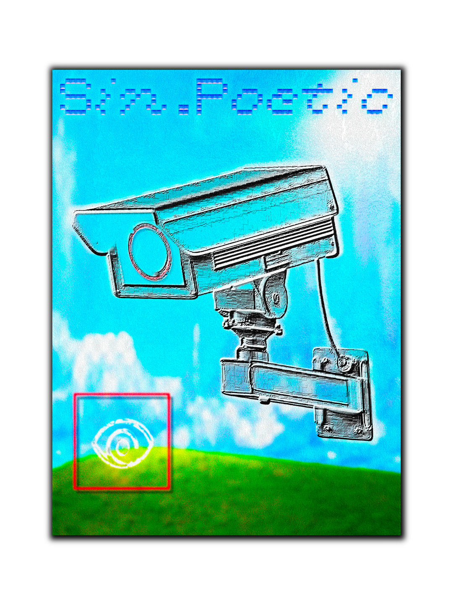

Welcome to Sin.Poetic!
This page brings together images and sounds to create atmospheres and evoke new meanings.
All videos and audio tracks have been personally selected by me. The videos consist of live feeds from unsecured security cameras listed on Insecam. The audio tracks are sourced from SoundCloud and compiled into a single playlist.
It is important to note that Insecam is a website that indexes unsecured security cameras, whose owners are, in many cases, unaware that their feeds are publicly accessible. Although cameras capturing private properties are relatively uncommon, the individuals and locations shown are generally not notified that they are being filmed or that their footage may be viewed by others.
Sin.Poetic explores the relationship between images, sounds, and the meanings that emerge when they are brought together. However, the material used in these compositions raises important questions about surveillance, privacy, and the ethics of using images captured without the subjects' knowledge. These feeds are not merely visual material; they document real places and potentially real lives, exposed to an audience that was never necessarily intended to see them.
Website created by Maurice Eggel during the workshop <3 FOREVER ONLINE, TOGETHER ONLINE <3, led by Rifke Sadleir [26.10–30.10.26].